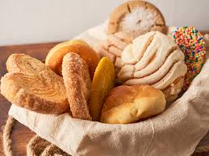

|
| Pan de muerto | Pan dulce | pan blanco | |
|  |
Pan de muerto |
Pan dulce |
Pan blanco |
|
| Un pan tradicional mexicano, suave y esponjoso, adornado con un glaseado dulce y espolvoreado con azúcar. Este pan se elabora especialmente para la celebración del Día de Muertos, simbolizando el ciclo de la vida y la muerte. Su sabor ligero y aromático, con un toque de anís, lo convierte en una delicia irresistible. | Una variedad de panes que incluye diferentes formas y sabores, como conchas, orejas y besos. Estos panes son tiernos y ligeramente dulces, perfectos para acompañar el café o chocolate caliente. Cada pieza está decorada de manera colorida, lo que los hace visualmente atractivos y populares en desayunos y meriendas. | Un pan básico, suave y ligero, ideal para cualquier ocasión. Su miga es esponjosa y su corteza dorada, lo que lo hace perfecto para sandwiches, tostadas o simplemente acompañado de mantequilla. Es un alimento versátil que se disfruta en todo momento, desde el desayuno hasta la cena. |
Precio: $20
Stock disponible: 50
Precio: $30
Stock disponible: 100
Precio: $15
Stock disponible: 100
Precio: $15
Stock disponible: 100
Precio: $15
Stock disponible: 100
| Producto | Cantidad | Precio Unitario | Total |
|---|